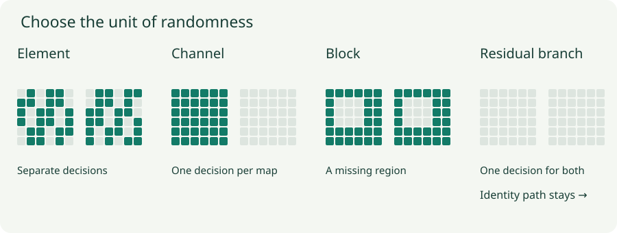

Structured Dropout and Stochastic Depth: Choose What Disappears
See why element-wise dropout fails on spatially correlated feature maps, and how SpatialDropout, DropBlock, and Stochastic Depth correlate the mask.
In convolutional feature maps, adjacent pixels carry nearly identical information. Dropping isolated pixels at random leaves neighbors intact, so a $3\times 3$ convolution immediately reconstructs the missing feature. Structured dropout ties mask entries together across space, channels, time, or entire residual branches.
1. Why mask correlation matters
Take two neighboring activations $a$ and $b$ in a feature map with keep probability $q=1-p$:
- Independent masks ($m_a,m_b\stackrel{\text{i.i.d.}}{\sim}\operatorname{Bernoulli}(q)$): $\operatorname{Cov}(\tilde a,\tilde b)=0$, and the probability that at least one neighbor survives is $1-p^2$ (for $p=0.2$, $96\%$ of pairs still pass the feature forward).
- Shared mask ($m\sim\operatorname{Bernoulli}(q)$ for both): With $\tilde a=ma/q$ and $\tilde b=mb/q$, since $m^2=m$,
$$\operatorname{Cov}(\tilde a,\tilde b)=\mathbb E[\tilde a\tilde b]-\mathbb E[\tilde a]\mathbb E[\tilde b]=q\frac{ab}{q^2}-ab=\frac{1-q}{q}ab=\frac{p}{q}ab.$$Both locations survive or vanish together, forcing the network to rely on other channels or regions.

2. SpatialDropout, DropBlock, and Variational RNN Dropout
| Method | Mask shape / rule | Why it works |
|---|---|---|
Spatial / Channel Dropout (Dropout2d) | $[B, C, 1, 1]$ broadcast over $H\times W$ | Drops entire feature maps so adjacent pixels cannot fill in a missing channel. |
| DropBlock | Centers $c_{ij}\sim\operatorname{Bernoulli}(\gamma)$ expanded to $b\times b$ zero squares | Erases contiguous $b\times b$ semantic patches; center rate is $\gamma=\dfrac{1-q}{b^2}\dfrac{H^2}{(H-b+1)^2}$, then surviving activations scale by $\dfrac{\text{total elements}}{\text{kept elements}}$. |
| Locked / Variational RNN Dropout | $[B, 1, D]$ broadcast over $T$ timesteps | Reuses the same feature mask across all timesteps so recurrent state isn’t wiped out by fresh noise every step. |
3. Lab: compare mask structures on two $8\times 8$ feature maps
Two 8 × 8 feature maps
Change the mask structure and sample again. The block option deliberately uses one uniformly positioned square per map to isolate geometry; it is not the full multi-center DropBlock sampler. It reports its actual removed area.
4. Stochastic Depth (`DropPath`): drop residual branches
In a residual block $h_l=h_{l-1}+F_l(h_{l-1})$, Stochastic Depth drops the entire residual transformation $F_l$ with probability $1-q_l$ while keeping the identity skip connection intact:
During evaluation, $h_l=h_{l-1}+F_l(h_{l-1})$, which matches the training expectation $\mathbb E[h_l\mid h_{l-1}]=h_{l-1}+F_l(h_{l-1})$. Because early layers extract foundational features needed by all later blocks, survival probability typically decays linearly from $q_0=1$ at the input to $q_L$ at the final block $L$:
For $L=4$ blocks with survival rates $(0.9,0.8,0.7,0.6)$, the expected number of active branches per pass is $0.9+0.8+0.7+0.6=3.0$.
# Per-example Stochastic Depth (DropPath) on a residual branch x + drop_path(F(x))
def drop_path(u: torch.Tensor, drop_prob: float, training: bool) -> torch.Tensor:
if not training or drop_prob == 0.0:
return u
keep = 1.0 - drop_prob
shape = (u.shape[0],) + (1,) * (u.ndim - 1) # [B, 1, 1, ...]
mask = (torch.rand(shape, device=u.device, dtype=u.dtype) < keep).to(u.dtype)
return u * mask / keep5. Questions worth answering
Adjacent pixels in a feature map are highly correlated. When isolated pixels are zeroed out, the next $3\times 3$ convolution still sees up to $8$ neighboring pixels with almost identical activation values.
If both the skip connection and $F_l$ were zeroed out, all activations and backward gradients would be severed at block $l$. Masking only $F_l(h_{l-1})$ shortens the effective network depth while keeping the identity highway unbroken.
Sources
Ghiasi et al., DropBlock: A regularization method for convolutional networks; Huang et al., Deep Networks with Stochastic Depth; Gal and Ghahramani, A Theoretically Grounded Application of Dropout in Recurrent Neural Networks.